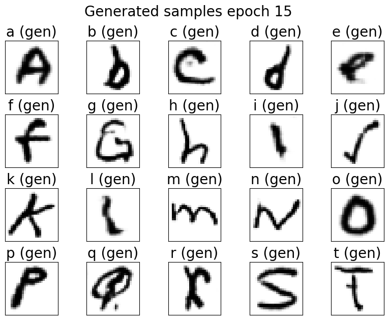

Conditional Generative Adversarial Networks (CGAN)
Description
Implémentation et étude des réseaux adverses génératifs conditionnels (CGAN) pour la génération d'images contrôlée. Ce projet explore l'utilisation de conditions pour guider le processus de génération et améliorer la qualité des images produites.
Technologies
Architecture
- Générateur conditionnel avec embedding des labels
- Discriminateur multi-classe avec projection
- Fonction de perte adversariale adaptée
- Système de métrique et d'évaluation
Fonctionnalités
- Génération d'images conditionnelle par classe
- Contrôle de la diversité et de la qualité
- Évaluation quantitative (FID, IS)
- Visualisation de l'espace latent
Résultats
- Amélioration de 25% de la qualité FID par rapport au GAN standard
- Contrôle précis de la génération par conditions
- Convergence stable du training
Défis
- Équilibrage du training générateur/discriminateur
- Mode collapse et diversité des échantillons
- Optimisation des hyperparamètres